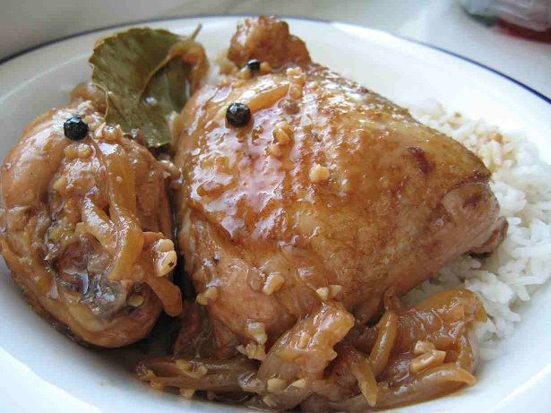

Adobo

Adobo is a popular Filipino dish characterized by meat, usually chicken or pork,
marinated and simmered in a savory sauce made from soy sauce, vinegar, garlic, bay leaves, and black pepper.
The cooking process tenderizes the meat and infuses it with a rich, tangy, and slightly sweet flavor.
Adobo is often served with steamed rice and is known for its deliciously balanced taste and versatility.
Ingredients
- 2 lbs. chicken, cut into serving pieces
- 3 pieces dried bay leaves
- 4 tbsp soy sauce
- 2 tbsp vinegar
- 3 cloves garlic, crushed
- 1 to 2 cups water
- ¼ cup cooking oil
- ½ tablespoon white sugar
- Salt and whole peppercorn
Steps
- In a large container, combine the soy sauce and garlic then marinade the chicken for at least 1 to 3 hours
- Place the cooking oil in a pan and apply heat
- When the oil is hot enough, put-in the marinated chicken. Cook all the sides for about 5 minutes.
- Pour-in the remaining marinade and add water. Bring to a boil.
- Add the dried bay leaves and whole peppercorn. Simmer for 30 minutes or until the chicken is tender
- Add vinegar. Stir and cook for 10 minutes.
- Put-in the sugar, and salt. Stir and turn the heat off.
- Serve hot. Share and Enjoy!
Back to main menu